Hello!
Just wanted to share some new techniques I learned while working on week 7 of #RecreationThursday challenge. Specifically, we’ll focus on using the flow field to draw smooth curves.
I ended up submitting this, but I got so much better while writing this blog post!
I mainly tried to find the right parameter combinations that work with certain colours, by trial and error. Here are some of my favourites.


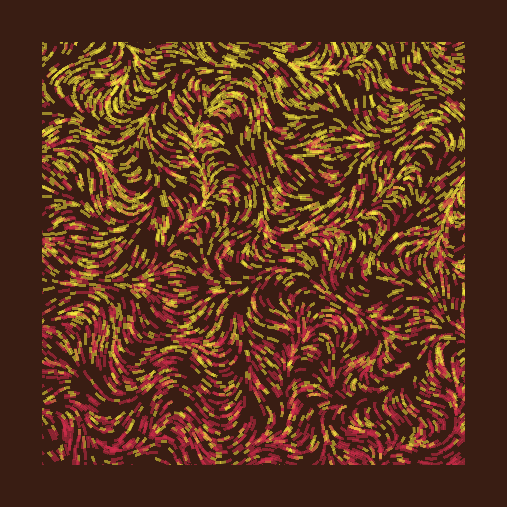  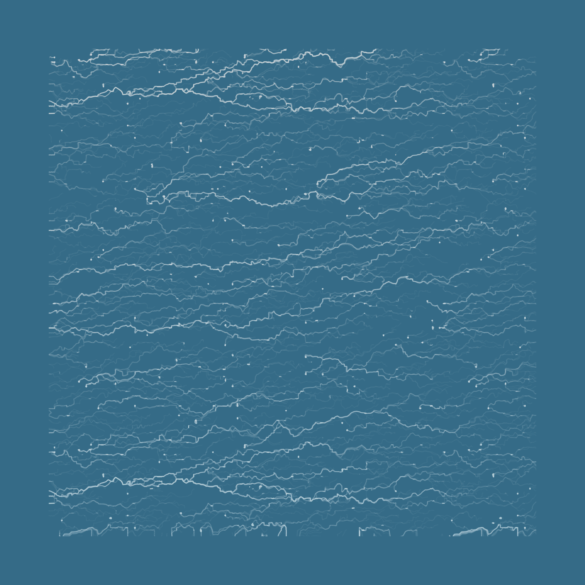
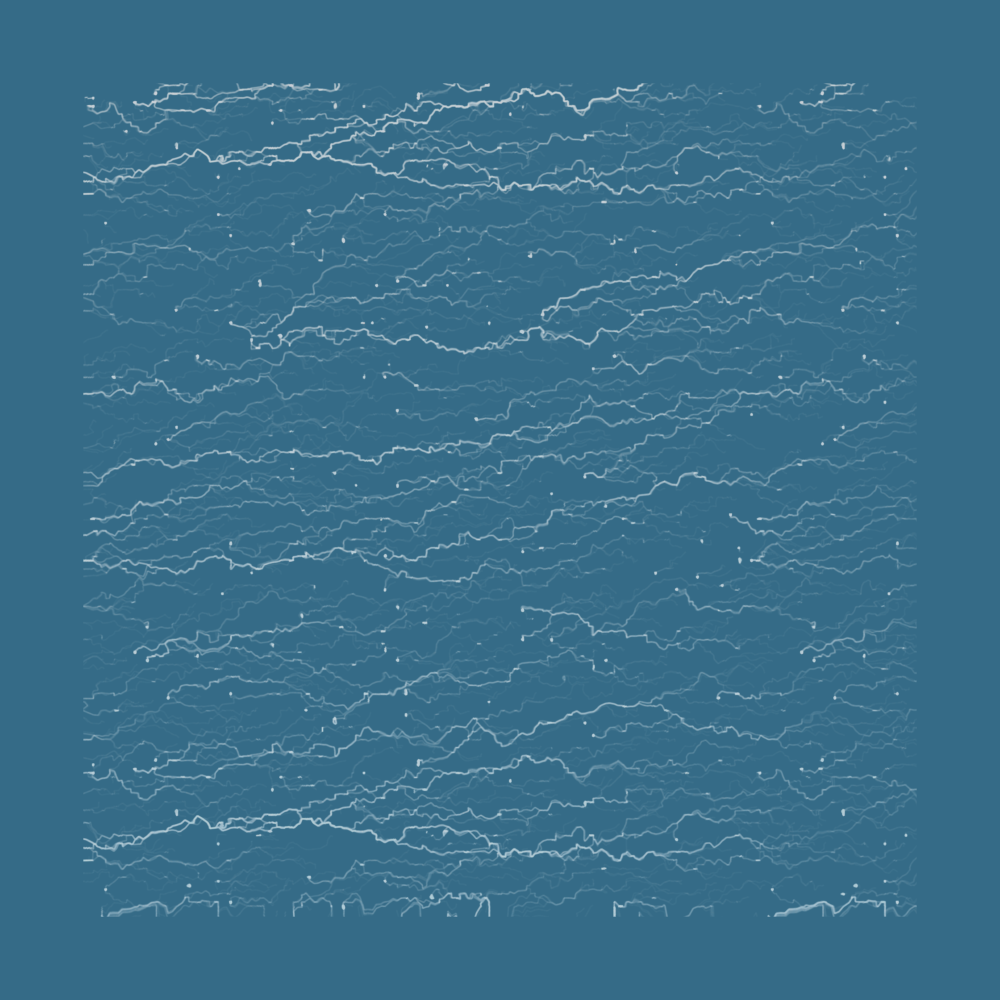
These are some resources that got me started, as a complete beginner in this area:
Without further ado, let’s first go through the basics, before we start diving into more interesting details.
The steps I took are:
We’ll start with a 10 x 10 grid, and initialize all items with some angles. I’m just going to fit 0 ~ 2*pi according to the y-position.
I like to start by crossing x/y combinations, because it works so well with ggplot2, but we’re going to throw it into a matrix for later use (row/col indexing).
library(tidyverse)
my_grid <- crossing(
x = 1:10,
y = 1:10
) %>%
mutate(angle = (y / 10) * 2*pi)
my_flow_field <- matrix(data = my_grid$angle, nrow = 10, ncol = 10)This is what we have:
grid_visualized <- my_grid %>%
mutate(
xend = x + cos(angle) * 0.5,
yend = y + sin(angle) * 0.5
) %>%
ggplot() +
geom_segment(aes(x = x, y = y, xend = xend, yend = yend)) +
geom_point(aes(x = x, y = y)) +
coord_equal()
grid_visualized
We’ll drop a couple particles, defined as a tibble containing x/y coords.
my_particles <- tibble(
x = c(2.5, 8.5),
y = c(2.5, 3.5)
)
grid_visualized +
geom_point(data = my_particles, aes(x = x, y = y), color = "red", size = 3)
Let’s perform one iteration of step 3, 4 & 5 from the above.
- Find the grid item that is closest to the current position.
- Extend the current position with that angle, by a specified amount.
- Repeat
To do this, we find the col/row index in the flow field that’s closest to the current particle’s x/y position. For now, one unit increase in x/y coords, matches one unit increase in col/row in the flow field grid (we’ll come back to this later).
Grab that angle in the flow field, and draw a line from the particle at that angle by a specified amount. (say 2.8)
get_closest_angle <- function(x, y, flow_field) {
max_x <- ncol(flow_field)
max_y <- nrow(flow_field)
closest_x_index <- which(abs(1:max_x - x) == min(abs(1:max_x - x)))[[1]] # Pick the first one, if there's multiple points with same distances
closest_y_index <- which(abs(1:max_y - y) == min(abs(1:max_y - y)))[[1]]
closest_angle <- flow_field[[closest_y_index, closest_x_index]]
return(closest_angle)
}
next_angle <- my_particles %>%
pmap_dbl(get_closest_angle, flow_field = my_flow_field)
my_particles <- my_particles %>%
mutate(angle = next_angle) %>%
mutate(xend = x + cos(angle) * 2.8,
yend = y + sin(angle) * 2.8)
grid_visualized +
geom_segment(data = my_particles, aes(x = x, y = y, xend = xend, yend = yend), color = "red") +
geom_point(data = my_particles, aes(x = x, y = y), color = "red", size = 3)
You can keep iterating this, each time, using the newly calculated destination points as the starting x/y coords for the next line to be drawn.
After 1 more iteration, you end up with this:

That’s it! This is all you need to understand to get started with the flow field. After this, it’s just playing around with parameters to explore your creativity!
I broke down the workflow above, into 3/4 controllable functions.
generate_flow_fieldstart_particlesdraw_curve + step_into_next_curve_segmentIn short, these work together to define a flow field with perlin noise, sprinkle some particles, and track how they move.
Chaining all the functions together was a little manual, so I won’t cover that, but if you’re interested, check my github.
generate_flow_fieldWhat it does: Generate a square flow field. This time with a width, as opposed to # columns.
We’ll still control how many rows/cols to fit into that given width/height, using a resolution_factor. Also, instead of y-scaling the angles, let’s use perlin noise to generate semi-random patterns.
library(ambient)
generate_flow_field <- function(flow_field_width = 1000,
resolution_factor = 0.025,
perlin_scale_factor = 0.005,
perlin_seed,
perlin_freq) {
resolution <- flow_field_width * resolution_factor
num_cols <- flow_field_width %/% resolution
num_rows <- num_cols
long_grid_ff <- ambient::long_grid(x = 1:num_cols,
y = 1:num_rows) %>%
mutate(x = x * perlin_scale_factor,
y = y * perlin_scale_factor) %>%
mutate(angle = ambient::gen_perlin(x,
y,
seed = perlin_seed,
frequency = perlin_freq))
# normalize angles to be between 0 & 2pi
min_per <- min(long_grid_ff$angle)
max_per <- max(long_grid_ff$angle)
long_grid_ff <- long_grid_ff %>%
mutate(angle = (angle-min_per) / (max_per-min_per) * (2*pi-0) + 0)
my_flow_field <- matrix(data = long_grid_ff$angle,
ncol = num_cols,
nrow = num_rows)
visualized_flow_field <- crossing(
x = 1:num_cols,
y = 1:num_rows
) %>%
mutate(angle = map2_dbl(x, y, ~my_flow_field[[.y, .x]])) %>%
mutate(xend = x + cos(angle) * 0.5,
yend = y + sin(angle) * 0.5) %>%
mutate(x_index = x, y_index = y) %>%
mutate(across(c(x, y, xend, yend), ~ .x * resolution))
list(my_flow_field, visualized_flow_field)
}Resolution determines how fine of a flow field we want, therefore the overall smoothness of the output.
Here’s small vs big resolution_factor, all else equal.
 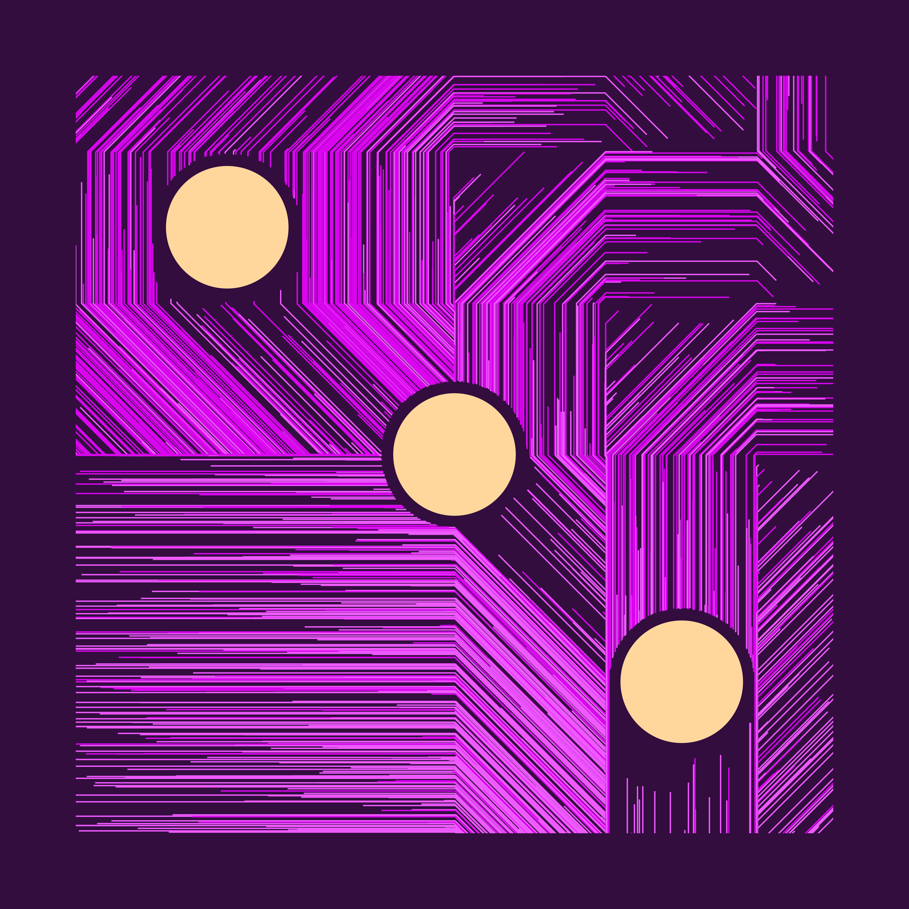
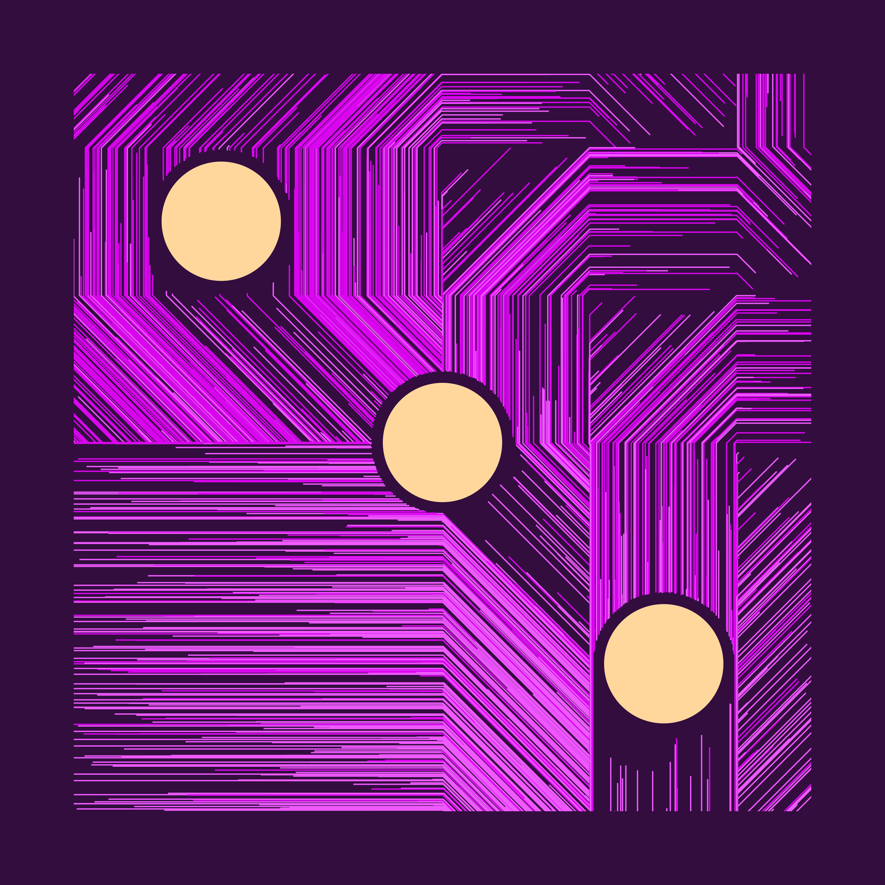
The choppy look on the right makes sense, because the underlying flow field doesn’t have too many angles to work with.
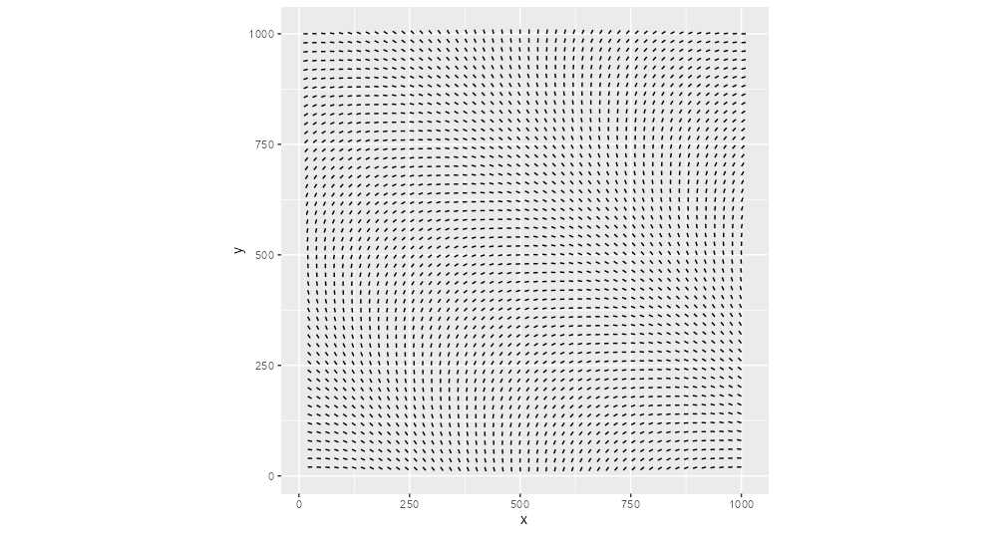 
Perlin noise generates a semi-random sequence of numbers, in a way that all items are somewhat similar to their immediate neighbours. This sounds pretty confusing. But for now, all we have to know is, that we can feed the sequence of row/col grid indexes, to get back some interesting and smooth sequence of noise (same length).
After some research, I got a decent understanding of how perlin noise worked, but I relied heavily on Thomas Lin Pedersen’ ambient package for the actual maths part.
There’s a ton of good resources if you want to learn more. I liked The Coding Train on YouTube and Eevee’s blog post.
perlin_scale_factor controls how large of a perlin noise sequence we want to look at. It scales our row/col index sequence, before feeding them to the ambient::gen_perlin transformation.
The larger the scale factor, the longer the length of the noise sequence. On the other hand, if the factor is small, we zoom in to a small part of the sequence, resulting in less craziness.
Here’s small vs big perlin_scale_factor
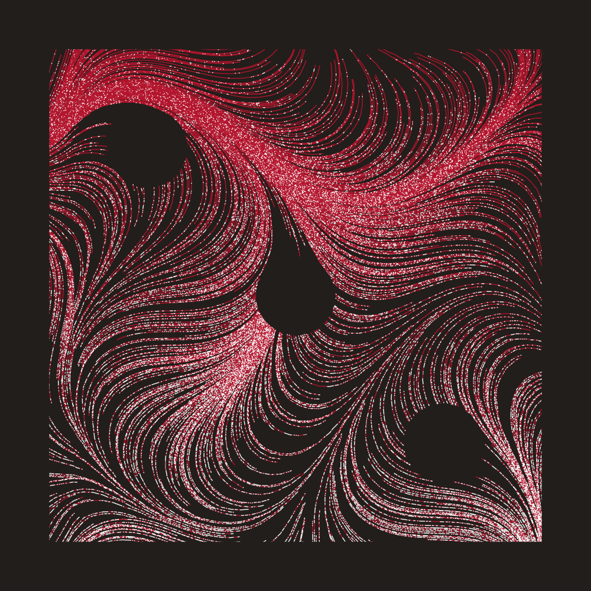 
On the left, the curves are wider and slower, whereas on the right, the curves are more hairy, because we run it through a wider range of noise sequence.
perlin_seed is just a seed used for the noise generating process. Here are some variations of my favourite piece:


The documentation of ambient::gen_perlin says:
frequency determines the granularity of the features in the noise.
I really didn’t understand how exactly this parameter works, but I did observe, that the higher the frequency, the more rigid the outcome looked. These do come into play in colour selection. More on that later!
Anyway, here’s small vs big perlin_freq
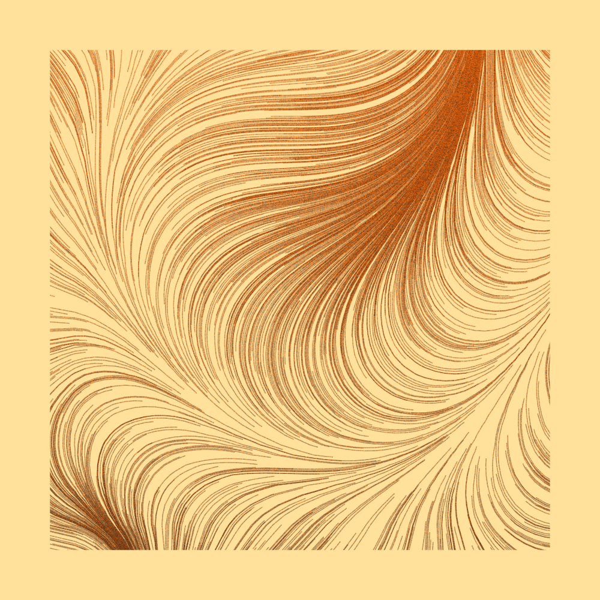 
Tuning perlin_freq and perlin_scale_factor at the same time gives you some interesting results. Highly recommended.
And that’s it for this function! We now have a flow field to work with.
start_particlesWhat it does: Populate some particles
I sampled the starting x/y points from a uniform distribution with 10% padding on the flow field width/height from both ends.
start_particles <- function(n_out = 800,
flow_field_width,
num_steps,
step_length,
flow_field,
resolution_factor)
{
df <- tibble::tibble(
start_x = runif(flow_field_width*-0.1, flow_field_width*1.1, n=n_out),
start_y = runif(flow_field_width*-0.1, flow_field_width*1.1, n=n_out)
) %>%
mutate(row_num = row_number(),
resolution = flow_field_width * resolution_factor,
num_steps = num_steps,
step_length = step_length)
df %>%
pmap_dfr(draw_curve,
flow_field = flow_field)
}The only parameter we really use here is n_out, which specifies the number of particles to drop. The rest, we pass onto draw_curve, to kick-start the curve generating process.
Here’s n_out at 200 vs 400 vs 1000

 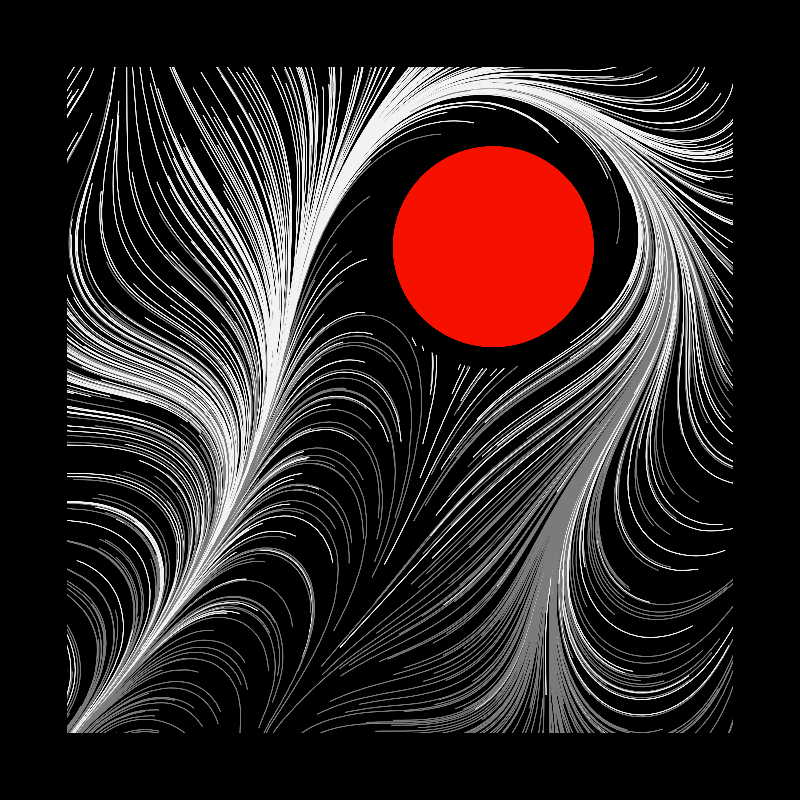
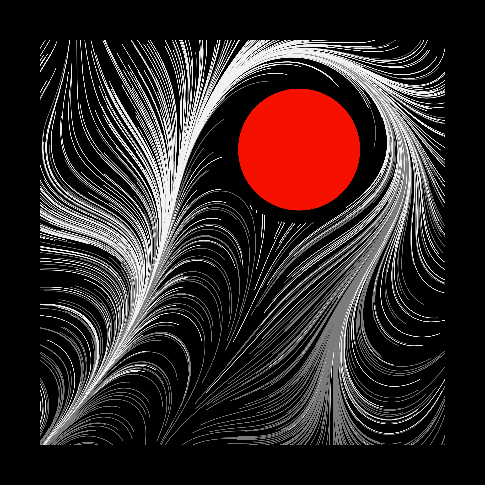
While the drawing gets more details with increasing n_out, if done too much, you start to get “clumps” of lines, which may or may not be desirable.
draw_curve & step_into_next_curve_segmentWhat it does: Simulate curve movement, and save the result
This is where the action unfolds. draw_curve starts the curve drawing process (… well, a collection of small lines). We begin by creating a vector of length: num_steps+1, and store the starting x/y of a particle as the first item. From there, we calculate where the particle will move to next, with step_into_next_curve_segment. We’ll call it num_steps times, storing the results each time.
draw_curvedraw_curve <- function(start_x,
start_y,
row_num,
flow_field,
resolution,
left_x = 1 * resolution,
bot_y = 1 * resolution,
num_steps,
step_length)
{
x_container <- vector("numeric", num_steps+1)
y_container <- vector("numeric", num_steps+1)
x_container[1] <- start_x
y_container[1] <- start_y
# grid dimension range
x_dim_range <- 1:ncol(flow_field)
y_dim_range <- 1:nrow(flow_field)
# With the rest of num_steps, move through the flow field,
# Each time, stepping towards the closest angle we can grab.
for (i in 1:num_steps) {
next_step <- step_into_next_curve_segment(
start_x = x_container[i],
start_y = y_container[i],
left_x = left_x,
bot_y = bot_y,
resolution = resolution,
x_dim_range = x_dim_range,
y_dim_range = y_dim_range,
flow_field = flow_field,
step_length = step_length
)
x_container[i+1] <- next_step$x
y_container[i+1] <- next_step$y
}
tibble::tibble(
x = x_container,
y = y_container,
row_num = row_num
) %>%
dplyr::mutate(plot_order = dplyr::row_number())
}Notice the return value of this function (tibble containing x/y coordinates) has two different id columns, row_num & plot_order, for line-specific & segment-of-a-line-specific groupings. We’ll use this for colours later.
These two parameters control the overall texture/feel of the “brush stroke”s.
num_steps controls how many times we want to extend our particles. Here’s num_steps 500 vs 2000 at step_length == 0.001
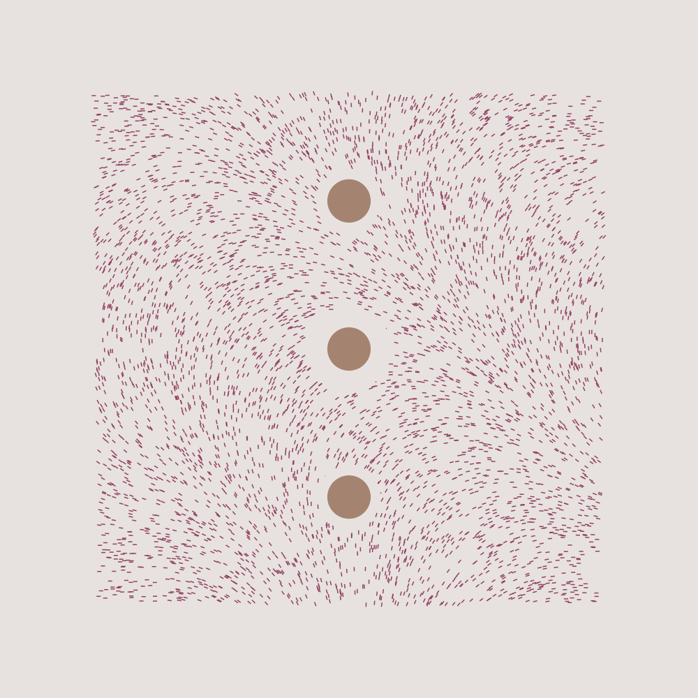 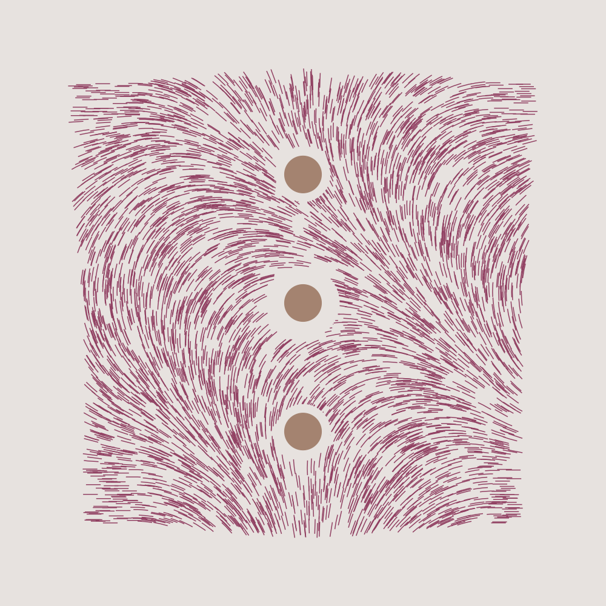
step_length controls how long each line segment should extend from its previous positions. Here’s step_length 0.001 vs 0.005 at num_steps == 2000 (*different seed from above)
 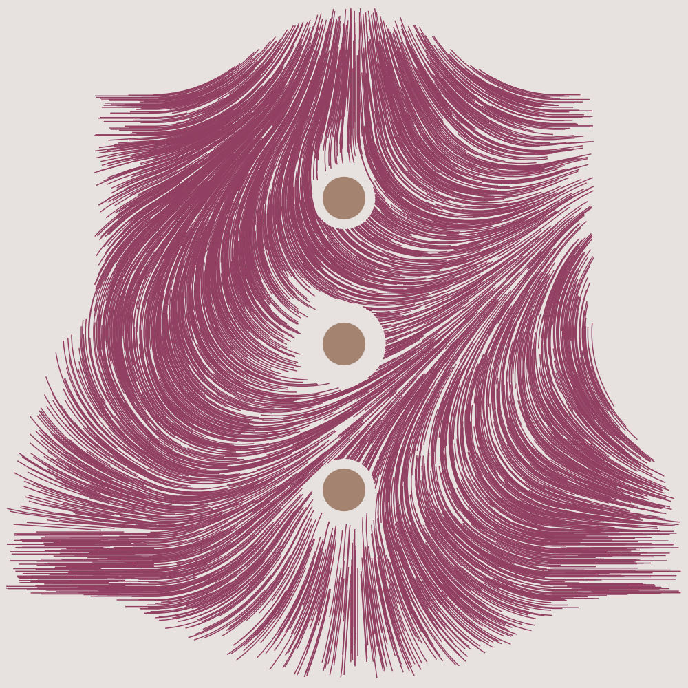
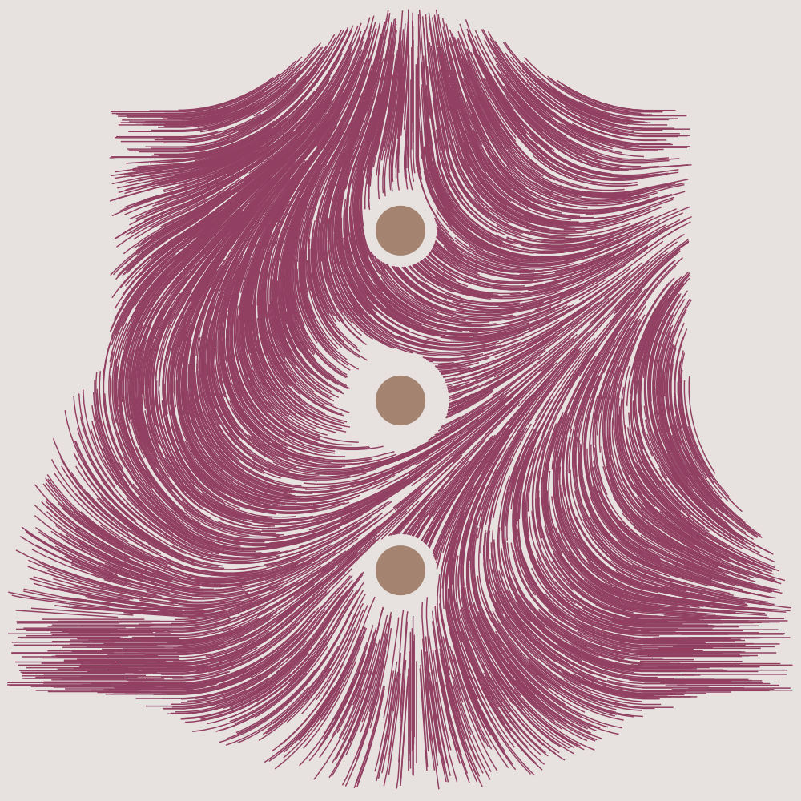
They can be redundant in some situations, and look very similar. Try experimenting these with other parameters, like resolution_factor, perlin_scale_factor, perlin_freq and colours.
step_into_next_curve_segmentWhat it does: Calculate the next movement of a particle, and return its x/y position.
This is the workhorse of the whole process. Thankfully, we’ve already looked at something similar to this in the basics section above.
There’s really no parameters to play with here, everything has been decided before reaching this function.
step_into_next_curve_segment <- function(start_x,
start_y,
left_x,
bot_y,
resolution,
x_dim_range,
y_dim_range,
flow_field,
step_length)
{
# Get the current x/y position (in relation to grid size)
x_offset <- start_x - left_x
y_offset <- start_y - bot_y
# Scale it down, to match grid dimension
curr_x_index <- round(x_offset / resolution, digits = 0)
curr_y_index <- round(y_offset / resolution, digits = 0)
# Find the closest point on the grid at each x/y
closest_x_index <- which(abs(x_dim_range - curr_x_index) == min(abs(x_dim_range - curr_x_index)))[[1]]
closest_y_index <- which(abs(y_dim_range - curr_y_index) == min(abs(y_dim_range - curr_y_index)))[[1]]
# Grab that angle
closest_angle <- flow_field[[closest_y_index, closest_x_index]]
# Extend the current line into that angle (scale it up again)
x_step <- step_length * cos(closest_angle) * resolution
y_step <- step_length * sin(closest_angle) * resolution
res_x <- start_x + x_step
res_y <- start_y + y_step
list(x = res_x, y = res_y)
}And‚Ķ You‚Äôve made it! That‚Äôs how everything fits in together! üéâ
We’re almost there! Hear me out for a second while I put a finishing touch to our art piece with some colour work.
If you’ve noticed so far, I’ve been mixing in 3-4 different colours.
To make the 2-colour gradient work, I filled every single line segment (of length step_length) separately, by sampling 2 colours with weights based on y-location. (one colour is more dominant at the top) Like so:
 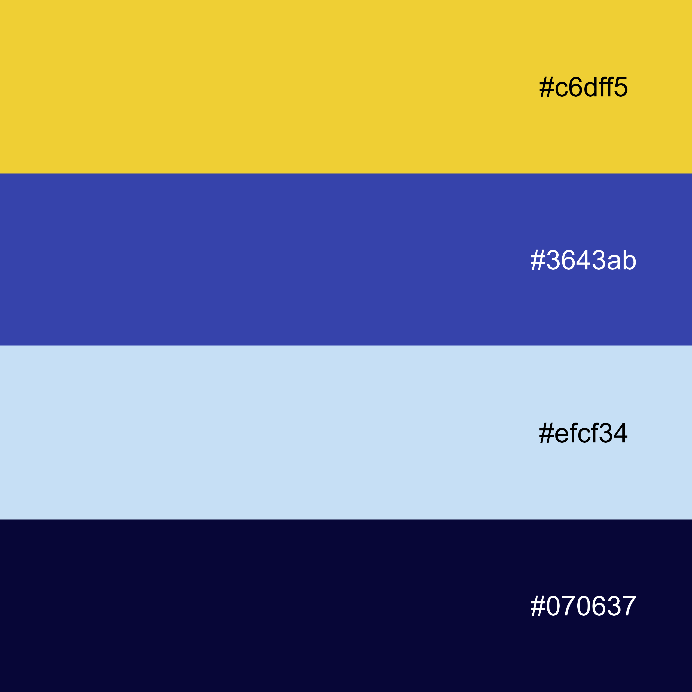
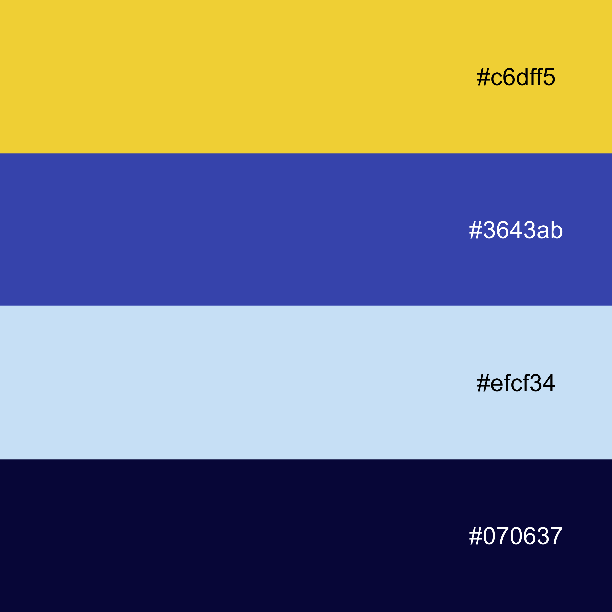
But here’s the catch. Remember the awkward wording I had on groupings in function #3, draw_curve?
Notice the return value of this function has two different id columns,
row_num&plot_order, for line-specific & segment-of-a-line-specific groupings. We’ll use this for colours later.
Using these id columns, I can apply my colour palettes at either line or segment level. So far, I’ve been mostly doing segment colouring, but there are 2 line colouring methods that I explored. (weighted on mean y of line vs starting y of line)
Left-to-right: segment, line-mean, line-start


The difference between 2 line methods is subtle. You’ll notice that there’s more blue flowing into the bottom right corner, because those lines started in the upper half of the picture.
Hope you enjoyed this tutorial! I absolutely loved working on this, and writing this blog post really took my understanding of this concept to a new level. If you’ve read this far, you can do everything I’ve shown here, without a doubt. There’s a ton of things you can do with this concept, and I encourage you to explore all the possibilities!